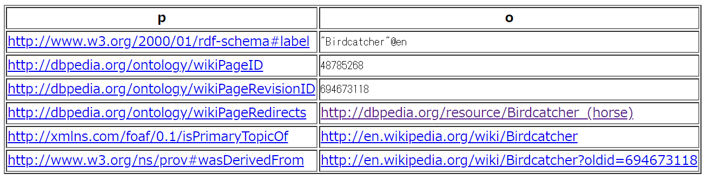
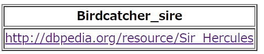

SPARQLを使用して英語版DBpediaからディープインパクトの始祖を辿る
はじめに
下記記事のリベンジ記事です。有馬記念の勝ち馬からサラブレッドの始祖まで辿ろうとしたが、dbpedia-jp(jp.wikipedia.org)のURI誤りで途中で終わってしまった。
日本語版DBPediaで有馬記念の勝ち馬からサラブレッドの始祖を辿る | my opinion is my own https://zatoima.github.io/sparql-graph-thoroughbred-search.html
リベンジとして、英語版のDBPediaを使いディープインパクトを起点として始祖まで辿ろうと思います。
競馬で走る馬はサラブレッドと呼ばれますが、血統を辿ると全て3頭の馬(ダーレーアラビアン、ゴドルフィンアラビアン、バイアリーターク)にさかのぼると言います。
3大始祖と世界の血統：サラブレッド講座 JRA http://www.jra.go.jp/kouza/thoroughbred/founder/
DBpedia（英語版）
Virtuoso SPARQL Query Editor https://dbpedia.org/sparql
SPARQLクエリ
最終的にこうしました。
述語部分はsireとなります。父という意味です。リーディングサイアー (Leading Sire)と言いますね。
PREFIX dbpedia: <http://dbpedia.org/ontology/>
select ?parent_gen1_name ?parent_gen2_name ?parent_gen3_name ?parent_gen4_name ?parent_gen5_name ?parent_gen6_name ?parent_gen7_name ?parent_gen8_name ?parent_gen9_name ?parent_gen10_name ?parent_gen11_name ?parent_gen12_name ?parent_gen13_name ?parent_gen14_name ?parent_gen15_name ?parent_gen16_name ?parent_gen17_name ?parent_gen18_name ?parent_gen19_name ?parent_gen20_name ?parent_gen21_name ?parent_gen22_name ?parent_gen23_name ?parent_gen24_name ?parent_gen25_name
where {
<http://dbpedia.org/resource/Deep_Impact_(horse)> dbpedia:sire ?parent_gen1_name .
?parent_gen1_name dbpedia:sire ?parent_gen2_name . #Sunday_Silence
?parent_gen2_name dbpedia:sire ?parent_gen3_name . #Halo
?parent_gen3_name dbpedia:sire ?parent_gen4_name . #Hail_To_Reason
?parent_gen4_name dbpedia:sire ?parent_gen5_name . #Turn-To
?parent_gen5_name dbpedia:sire ?parent_gen6_name . #Royal_Charger
?parent_gen6_name dbpedia:sire ?parent_gen7_name . #Nearco
?parent_gen7_name dbpedia:sire ?parent_gen8_name . #Pharos
?parent_gen8_name dbpedia:sire ?parent_gen9_name . #Phalaris
?parent_gen9_name dbpedia:sire ?parent_gen10_name . #Polymelus
?parent_gen10_name dbpedia:sire ?parent_gen11_name . #Cyllene
?parent_gen11_name dbpedia:sire ?parent_gen12_name . #Bona_Vista
?parent_gen12_name dbpedia:sire ?parent_gen13_name . #Bend_Or
?parent_gen13_name dbpedia:sire ?parent_gen14_name . #Doncaster
?parent_gen14_name dbpedia:sire ?parent_gen15_name . #The_Baron
?parent_gen15_name dbpedia:sire ?parent_gen16_name . #Birdcatcher
?parent_gen16_name dbpedia:wikiPageRedirects ?Birdcatcher_wpr .
?Birdcatcher_wpr dbo:sire ?parent_gen17_name . #Sir_Hercules
?parent_gen17_name dbpedia:sire ?parent_gen18_name . #Whalebone
?parent_gen18_name dbpedia:sire ?parent_gen19_name . #Waxy
?parent_gen19_name dbpedia:sire ?parent_gen20_name . #Potoooooooo
?parent_gen20_name dbpedia:sire ?parent_gen21_name . #Eclipse
?parent_gen21_name dbpedia:sire ?parent_gen22_name . #Marske
?parent_gen22_name dbpedia:sire ?parent_gen23_name . #Squirt
?parent_gen23_name dbpedia:sire ?parent_gen24_name . #Bartlets_Childers
?parent_gen24_name dbpedia:wikiPageRedirects ?Bartlets_Childers .
?Bartlets_Childers dbo:sire ?parent_gen25_name . #Darley_Arabian
}
補足
BirdcatcherとBartlets_Childersには他の競走馬にあるhttp://dbpedia.org/ontology/sireプロパティがなく、そこからは親を辿れません。
PREFIX dbpedia: <http://dbpedia.org/ontology/>
select *
where {
<http://dbpedia.org/resource/Birdcatcher> ?p ?o .
}

述語がhttp://dbpedia.org/ontology/wikiPageRedirectsのhttp://dbpedia.org/resource/Birdcatcher_(horse)に行くとdbo:sireがありましたのでこちらのPropertyを使用します。
こうすることでsireを取得することが出来ました。
PREFIX dbpedia: <http://dbpedia.org/ontology/>
select ?Birdcatcher_sire
where {
<http://dbpedia.org/resource/Birdcatcher> dbpedia:wikiPageRedirects ?Birdcatcher_wpr .
?Birdcatcher_wpr dbo:sire ?Birdcatcher_sire
}

結果
最終的な結果はこうなりました。ディープインパクトの始祖はDarley_Arabianとなります！
| 世代 | 馬名 |
|---|---|
| 1 | Sunday_Silence |
| 2 | Halo |
| 3 | Hail_To_Reason |
| 4 | Turn-To |
| 5 | Royal_Charger |
| 6 | Nearco |
| 7 | Pharos |
| 8 | Phalaris |
| 9 | Polymelus |
| 10 | Cyllene |
| 11 | Bona_Vista |
| 12 | Bend_Or |
| 13 | Doncaster |
| 14 | Stockwell |
| 15 | The_Baron |
| 16 | Birdcatcher |
| 17 | Sir_Hercules |
| 18 | Whalebone |
| 19 | Waxy |
| 20 | Potoooooooo |
| 21 | Eclipse |
| 22 | Marske |
| 23 | Squirt |
| 24 | Bartlet's_Childers |
| 25 | Darley_Arabian |